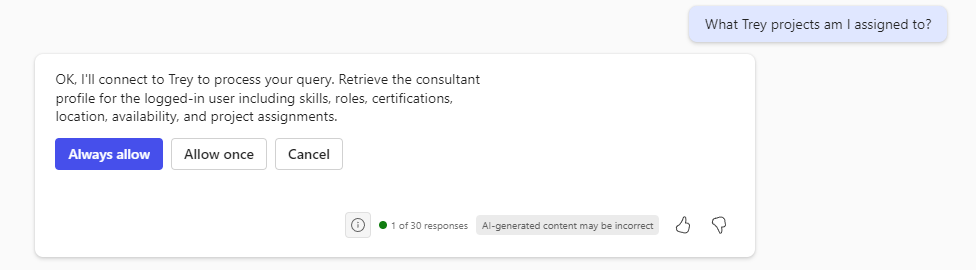
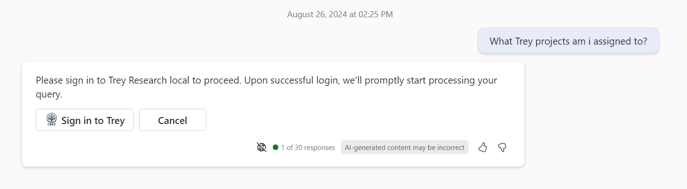
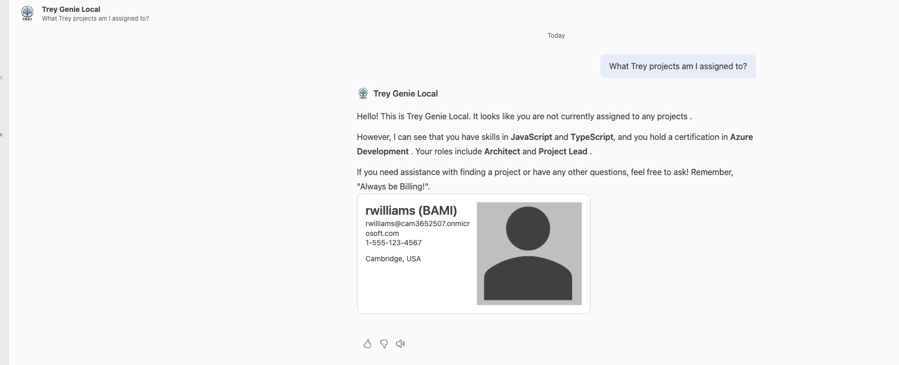

ラボ E6a - Entra ID 認証を OAuth で追加 (Agents Toolkit)
このラボでは、Entra ID を ID プロバイダーとして使用し、OAuth 2.0 で API プラグインに認証を追加します。Agents Toolkit を設定し、Entra ID と Teams Developer Portal への登録を自動化する方法を学習します。
Microsoft 365 が AI モデルとオーケストレーションを提供する宣言型エージェントを構築したい場合は、これらのラボを実施してください。
- 🏁 はじめに
- 🔧 セットアップ
- 🧰 宣言型エージェントの基礎
- 🛠️ API をゼロから構築して統合する
- 🔐 認証
- 🔌 統合
演習 1: ローカル Agents Toolkit 構成の更新
この演習では、Agents Toolkit の構成ファイルを変更し、Entra ID へのアプリ登録と Teams Developer Portal の「Vault」への情報登録を自動化するように設定します。
手順 1: Entra ID アプリ マニフェストを追加
作業フォルダーのルートに aad.manifest.json という新しいファイルを作成し、次の内容をコピーします。
{
"id": "${{AAD_APP_OBJECT_ID}}",
"appId": "${{AAD_APP_CLIENT_ID}}",
"name": "Trey-Research-OAuth-aad",
"accessTokenAcceptedVersion": 2,
"signInAudience": "AzureADMyOrg",
"optionalClaims": {
"idToken": [],
"accessToken": [
{
"name": "idtyp",
"source": null,
"essential": false,
"additionalProperties": []
}
],
"saml2Token": []
},
"oauth2Permissions": [
{
"adminConsentDescription": "Allows Copilot to access the Trey Research API on the user's behalf.",
"adminConsentDisplayName": "Access Trey Research API",
"id": "${{AAD_APP_ACCESS_AS_USER_PERMISSION_ID}}",
"isEnabled": true,
"type": "User",
"userConsentDescription": "Allows Copilot to access the Trey Research API on your behalf.",
"userConsentDisplayName": "Access Trey Research API",
"value": "access_as_user"
}
],
"replyUrlsWithType": [
{
"url": "https://teams.microsoft.com/api/platform/v1.0/oAuthRedirect",
"type": "Web"
}
],
"identifierUris": [
"api://${{AAD_APP_CLIENT_ID}}"
]
}
このファイルには、登録または更新される Entra ID アプリケーションの詳細が含まれています。${{AAD_APP_CLIENT_ID}} のようなトークンは、Agents Toolkit がアプリをプロビジョニングする際に実際の値に置き換えられます。
Note
Entra ID は以前「Azure Active Directory」と呼ばれていました。「AAD」という表記は旧名称である Entra ID を指します。
手順 2: teamsapp.local.yml のファイル バージョン番号を更新
teamsapp.local.yml ファイルには、ローカルでソリューションを実行・デバッグするときの Agents Toolkit の指示が記載されています。以降の手順でこのファイルを更新します。
teamsapp.local.yml は m365agents.local.yml に変更
新しい Agents Toolkit ではツールキット関連タスク用のファイル名が m365agents.local.yml に変更されました。新規にエージェントを作成した場合はこちらのファイル名になりますが、本ラボでは既存のプロジェクトを扱うため、リネームやリファクタリングは不要です。手順どおりに進めてください。
yaml のインデントは重要です
yaml ファイルはインデントで階層を表します。インデントを誤るとラボが動作しません。不安な場合は 完成版ファイル を参照してください。
これらのラボは、ファイル バージョン 1.5 を使用するやや古い Agents Toolkit で作成されました。この手順ではファイルをバージョン 1.7 に更新します。
まず、1 行目を次のスキーマ参照に置き換えます。
# yaml-language-server: $schema=https://aka.ms/teams-toolkit/v1.7/yaml.schema.json
次に 4 行目のバージョン番号を 1.7 に更新します。
version: v1.7
手順 3: Entra ID アプリケーションをプロビジョニング
ユーザーを認証し権限を付与するには、アプリケーションを Entra ID に登録する必要があります。この手順でアプリ登録を追加します。
ファイル内の次の行を探します:
provision:
# Creates a Teams app
provision: 行の直下に、以下の yaml を挿入します。読みやすさのために空行を入れてもかまいません。
# Creates a new Microsoft Entra app to authenticate users if
# the environment variable that stores clientId is empty
- uses: aadApp/create
with:
# Note: when you run aadApp/update, the Microsoft Entra app name will be updated
# based on the definition in manifest. If you don't want to change the
# name, make sure the name in Microsoft Entra manifest is the same with the name
# defined here.
name: trey-oauth-aad
# If the value is false, the action will not generate client secret for you
generateClientSecret: true
# Authenticate users with a Microsoft work or school account in your
# organization's Microsoft Entra tenant (for example, single tenant).
signInAudience: AzureADMyOrg
# Write the information of created resources into environment file for the
# specified environment variable(s).
writeToEnvironmentFile:
clientId: AAD_APP_CLIENT_ID
# Environment variable that starts with `SECRET_` will be stored to the
# .env.{envName}.user environment file
clientSecret: SECRET_AAD_APP_CLIENT_SECRET
objectId: AAD_APP_OBJECT_ID
tenantId: AAD_APP_TENANT_ID
authority: AAD_APP_OAUTH_AUTHORITY
authorityHost: AAD_APP_OAUTH_AUTHORITY_HOST
signInAudience を AzureADMyOrg に設定すると、Agents Toolkit は登録されたテナント内でのみ使用できるシングルテナント アプリを作成します。別のテナント (顧客テナントなど) でも使用したい場合は AzureADMultipleOrgs に変更してください。3 つのステップすべてで、先ほど作成した aad.manifest.json を使用します。
また、このステップでは複数の値が環境ファイルに書き込まれ、それらが aad.manifest.json やアプリ パッケージに挿入されます。
手順 4: Entra ID アプリケーションを更新
teamsapp.local.yml で次の行を探します
# Build Teams app package with latest env value
この行の前に以下の yaml を挿入します:
- uses: oauth/register
with:
name: oAuth2AuthCode
flow: authorizationCode
appId: ${{TEAMS_APP_ID}}
clientId: ${{AAD_APP_CLIENT_ID}}
clientSecret: ${{SECRET_AAD_APP_CLIENT_SECRET}}
# Path to OpenAPI description document
apiSpecPath: ./appPackage/trey-definition.json
writeToEnvironmentFile:
configurationId: OAUTH2AUTHCODE_CONFIGURATION_ID
- uses: oauth/update
with:
name: oAuth2AuthCode
appId: ${{TEAMS_APP_ID}}
clientId: ${{AAD_APP_CLIENT_ID}}
# Path to OpenAPI description document
apiSpecPath: ./appPackage/trey-definition.json
configurationId: ${{OAUTH2AUTHCODE_CONFIGURATION_ID}}
# Apply the Microsoft Entra manifest to an existing Microsoft Entra app. Will use the object id in
# manifest file to determine which Microsoft Entra app to update.
- uses: aadApp/update
with:
# Relative path to this file. Environment variables in manifest will
# be replaced before apply to Microsoft Entra app
manifestPath: ./aad.manifest.json
outputFilePath: ./build/aad.manifest.${{TEAMSFX_ENV}}.json
oauth/register と oauth/update ステップはアプリを Teams Developer Portal の Vault に登録し、Copilot が OAuth 2.0 Auth Code フローを実装するための詳細情報を取得できるようにします。aadApp/update ステップは Entra ID アプリ自体を更新します。詳細は別ファイル aad.manifest.json にありますが、これは次の演習で追加します。
手順 5: 出力パスを変更
新しい yaml スキーマでは出力パスが少し変わります。次の行を探します:
outputJsonPath: ./appPackage/build/manifest.${{TEAMSFX_ENV}}.json
これを次の行に置き換えます:
outputFolder: ./appPackage/build
手順 6: Entra ID の値をアプリケーション コードで利用可能にする
次の行を探します:
deploy:
# Install development tool(s)
- uses: devTool/install
with:
func:
version: ~4.0.5530
symlinkDir: ./devTools/func
# Write the information of installed development tool(s) into environment
# file for the specified environment variable(s).
writeToEnvironmentFile:
funcPath: FUNC_PATH
# Generate runtime environment variables
- uses: file/createOrUpdateEnvironmentFile
with:
target: ./.localConfigs
envs:
STORAGE_ACCOUNT_CONNECTION_STRING: ${{SECRET_STORAGE_ACCOUNT_CONNECTION_STRING}}
これはアプリケーション コードで使用する環境変数を公開しています。STORAGE_ACCOUNT_CONNECTION_STRING の下に次の行を追加し、利用できるようにします:
AAD_APP_TENANT_ID: ${{AAD_APP_TENANT_ID}}
AAD_APP_CLIENT_ID: ${{AAD_APP_CLIENT_ID}}
演習 2: 一般的な Agents Toolkit 構成を更新
teamsapp-local.yml がローカル デバッグ時の Agents Toolkit の動作を制御するのに対し、teamsapp.yml は Microsoft Azure へのデプロイ時の動作を制御します。この演習ではこのファイルを更新します。
yaml のインデントは重要です
yaml ファイルはインデントで階層を表します。インデントを誤るとラボが動作しません。不安な場合は 完成版ファイル を参照してください。
手順 1: Entra ID アプリケーションをプロビジョニング
ユーザーを認証し権限を付与するには、アプリケーションを Entra ID に登録する必要があります。この手順でアプリ登録を追加します。
ファイル内の次の行を探します:
provision:
# Creates a Teams app
provision: 行の直下に以下の yaml を挿入します。読みやすさのために空行を入れてもかまいません。
# Creates a new Microsoft Entra app to authenticate users if
# the environment variable that stores clientId is empty
- uses: aadApp/create
with:
# Note: when you run aadApp/update, the Microsoft Entra app name will be updated
# based on the definition in manifest. If you don't want to change the
# name, make sure the name in Microsoft Entra manifest is the same with the name
# defined here.
name: Repairs-OAuth-aad
# If the value is false, the action will not generate client secret for you
generateClientSecret: true
# Authenticate users with a Microsoft work or school account in your
# organization's Microsoft Entra tenant (for example, single tenant).
signInAudience: AzureADMyOrg
# Write the information of created resources into environment file for the
# specified environment variable(s).
writeToEnvironmentFile:
clientId: AAD_APP_CLIENT_ID
# Environment variable that starts with `SECRET_` will be stored to the
# .env.{envName}.user environment file
clientSecret: SECRET_AAD_APP_CLIENT_SECRET
objectId: AAD_APP_OBJECT_ID
tenantId: AAD_APP_TENANT_ID
authority: AAD_APP_OAUTH_AUTHORITY
authorityHost: AAD_APP_OAUTH_AUTHORITY_HOST
signInAudience を AzureADMyOrg に設定すると、Agents Toolkit は登録されたテナント内でのみ使用できるシングルテナント アプリを作成します。別のテナント (顧客テナントなど) でも使用したい場合は AzureADMultipleOrgs に変更してください。3 つのステップすべてで、先ほど作成した aad.manifest.json を使用します。
また、このステップでは複数の値が環境ファイルに書き込まれ、それらが aad.manifest.json やアプリ パッケージに挿入されます。
手順 2: Teams Developer Portal Vault にアプリを登録
teamsapp.yml で次の行を探します
# Validate using manifest schema
# - uses: teamsApp/validateManifest
# with:
# # Path to manifest template
# manifestPath: ./appPackage/manifest.json
# Build Teams app package with latest env value
最後の行の前に以下を挿入します:
# Apply the Microsoft Entra manifest to an existing Microsoft Entra app. Will use the object id in
# manifest file to determine which Microsoft Entra app to update.
- uses: aadApp/update
with:
# Relative path to this file. Environment variables in manifest will
# be replaced before apply to Microsoft Entra app
manifestPath: ./aad.manifest.json
outputFilePath: ./build/aad.manifest.${{TEAMSFX_ENV}}.json
- uses: oauth/register
with:
name: oAuth2AuthCode
flow: authorizationCode
appId: ${{TEAMS_APP_ID}}
clientId: ${{AAD_APP_CLIENT_ID}}
clientSecret: ${{SECRET_AAD_APP_CLIENT_SECRET}}
# Path to OpenAPI description document
apiSpecPath: ./appPackage/trey-definition.json
writeToEnvironmentFile:
configurationId: OAUTH2AUTHCODE_CONFIGURATION_ID
演習 3: アプリケーション パッケージを更新
Agents Toolkit が Entra ID 登録を設定できたので、次はアプリケーション パッケージを更新し、Copilot に認証情報を伝えます。
手順 1: Open API Specification ファイルを更新
Visual Studio Code で作業フォルダーを開きます。appPackage フォルダーの trey-definition.json を開き、次の行を探します:
"paths": {
その前に次の JSON を挿入します:
"components": {
"securitySchemes": {
"oAuth2AuthCode": {
"type": "oauth2",
"description": "OAuth configuration for the Trey Research service",
"flows": {
"authorizationCode": {
"authorizationUrl": "https://login.microsoftonline.com/${{AAD_APP_TENANT_ID}}/oauth2/v2.0/authorize",
"tokenUrl": "https://login.microsoftonline.com/${{AAD_APP_TENANT_ID}}/oauth2/v2.0/token",
"scopes": {
"api://${{AAD_APP_CLIENT_ID}}/access_as_user": "Access Trey Research API as the user"
}
}
}
}
}
},
これで API を呼び出す際に使用される新しいセキュリティ スキームが設定されます。
次に、このスキームを各 API パスに追加します。各パスの responses オブジェクトを探します:
"responses": {
...
各 responses の前に以下の JSON を挿入します (ファイル内に 5 か所あります。すべてに忘れず挿入してください):
"security": [
{
"oAuth2AuthCode": []
}
],
編集後は必ず保存してください。
手順 2: プラグイン ファイルを更新
appPackage フォルダー内の trey-plugin.json を開きます。このファイルには Open API Specification (OAS) に含まれない Copilot が必要とする情報が格納されています。
Runtimes の下に auth プロパティがあり、"None" になっています。これを次のように変更し、Vault に保存されている OAuth 設定で認証するよう Copilot に指示します。
"auth": {
"type": "OAuthPluginVault",
"reference_id": "${{OAUTH2AUTHCODE_CONFIGURATION_ID}}"
},
次の手順では、アプリケーション コードを更新し、実際の Microsoft 365 ユーザーとして API にアクセスするようにします (現在は Microsoft の架空名ジェネレーターで生成された "Avery Howard" となっています)。
演習 4: アプリケーション コードを更新
手順 1: JWT 検証ライブラリをインストール
作業ディレクトリでコマンド ラインを開き、次を実行します:
npm i jwt-validate
これにより、受信した Entra ID 認可トークンを検証するライブラリがインストールされます。
Warning
Microsoft は NodeJS で Entra ID トークンを検証する公式ライブラリを提供していません。その代わり、詳細ドキュメント が用意されています。また、Microsoft MVP の Andrew Connell による 有用な記事 もあります。
このラボでは コミュニティ提供ライブラリ (作者: Waldek Mastykarz) を使用します。このライブラリは MIT ライセンスで提供され、Microsoft によるサポートはありません。自己責任で使用してください。
サポートされるライブラリの進捗を追跡したい場合は、この GitHub issue をフォローしてください。
手順 2: identity サービスを更新
OAuth ログインは機能しますが、トークンが有効かどうかを確認しなければセキュリティは確保されません。この手順では、トークンを検証し、ユーザー名や ID などの情報を取得するコードを追加します。
src/services フォルダーの IdentityService.ts を開きます。
ファイルの先頭の import 群に次を追加します:
import { TokenValidator, ValidateTokenOptions, getEntraJwksUri } from 'jwt-validate';
次に、class Identity の直下に次の行を追加します:
private validator: TokenValidator;
次のコメントを探します:
// ** INSERT REQUEST VALIDATION HERE (see Lab E6) **
コメントを次のコードに置き換えます:
// Try to validate the token and get user's basic information
try {
const { AAD_APP_CLIENT_ID, AAD_APP_TENANT_ID } = process.env;
const token = req.headers.get("Authorization")?.split(" ")[1];
if (!token) {
throw new HttpError(401, "Authorization token not found");
}
// create a new token validator for the Microsoft Entra common tenant
if (!this.validator) {
// We need a new validator object which we will continue to use on subsequent
// requests so it can cache the Entra ID signing keys
// For multitenant, use:
// const entraJwksUri = await getEntraJwksUri();
const entraJwksUri = await getEntraJwksUri(AAD_APP_TENANT_ID);
this.validator = new TokenValidator({
jwksUri: entraJwksUri
});
console.log ("Token validator created");
}
const options: ValidateTokenOptions = {
allowedTenants: [AAD_APP_TENANT_ID],
audience: `${AAD_APP_CLIENT_ID}`,
issuer: `https://login.microsoftonline.com/${AAD_APP_TENANT_ID}/v2.0`,
scp: ["access_as_user"]
};
// validate the token
const validToken = await this.validator.validateToken(token, options);
userId = validToken.oid;
userName = validToken.name;
userEmail = validToken.preferred_username;
console.log(`Request ${this.requestNumber++}: Token is valid for user ${userName} (${userId})`);
}
catch (ex) {
// Token is missing or invalid - return a 401 error
console.error(ex);
throw new HttpError(401, "Unauthorized");
}
コードを読み解く
追加したコードを確認しましょう。まず Authorization ヘッダーからトークンを取得します。このヘッダーは "Bearer トークン" の形式なので、JavaScript の split(" ") でトークンのみを取得しています。
認証に失敗した場合は例外をスローし、Azure Function が適切なエラーを返します。
次に jwt-validate ライブラリ用のバリデーターを作成します。Entra ID の署名キーを取得するため非同期呼び出しです。
ValidateTokenOptions オブジェクトを設定し、以下を検証します:
- audience が API サービス アプリ URI と一致すること (トークンが本 Web サービス専用であることを保証)
- issuer が自テナントのセキュリティ トークン サービスであること
- scope がアプリ登録で定義した
"access_as_user"であること
トークンが有効なら、ライブラリはユーザー ID、名前、メールなどを含むクレームを返します。これらを使用し、架空ユーザー "Avery Howard" ではなく実ユーザーとして処理します。
演習 5: アプリケーションをテスト
手順 1: アプリ マニフェストのバージョン番号を更新
テスト前に appPackage\manifest.json の manifest バージョンを更新します。
-
プロジェクトの
appPackageフォルダーにあるmanifest.jsonを開きます。 -
versionフィールドを探します。例:
json "version": "1.0.0" -
バージョン番号を小数点以下でインクリメントします。例:
json "version": "1.0.1" -
保存します。
jwt-validate パッケージのコンパイル問題
現時点で jwt-validate パッケージは @types/jsonwebtoken に関する型エラーを投げます。回避策としてプロジェクト ルートの tsconfig.json に "skipLibCheck": true を追加してください。将来のバージョンで修正される可能性があります。
手順 2: アプリケーションを (再) 起動
以前のラボからアプリが実行中の場合は停止し、アプリ パッケージを再生成させます。
その後 F5 キーで再実行し、これまでと同様にインストールします。
手順 3: 宣言型エージェントを実行
Microsoft 365 Copilot に戻り、Trey Research エージェントを選択します。
「What Trey projects am I assigned to?」と入力します。API 呼び出しの確認カードが表示されたら、「Allow Once」をクリックしてください (ここでは認証は行われていません)。

確認カードの後にログイン カードが表示されます。
「Sign in to Trey」をクリックしてサインインします。最初はポップアップ ウィンドウが開き、ログインと同意が求められます。再訪時はブラウザーのキャッシュにより表示されない場合があります。

管理者承認が必要な場合
管理者がユーザーによる同意を許可していない場合、次のような画面が表示されることがあります:

この場合、管理者に依頼してアプリ登録に対し全ユーザーへのグローバル同意を付与してもらう必要があります。Microsoft 365 管理センター / Identity / Applications / App Registrations でアプリを開き、「Grant admin consent」を実行してください。

ログイン カードが消え、Copilot からの応答が表示されます。データベースに追加されたばかりなので、まだプロジェクトは割り当てられていません。
ユーザーは架空の "Avery Howard" から実ユーザーに変わりました。新しいコードが初めて実行されると、ユーザー ID が見つからないため、新しいコンサルタント レコードが作成されますが、まだプロジェクトは割り当てられていません。

手順 4: 自分をプロジェクトに追加
データベースに追加されたばかりなので、プロジェクトは割り当てられていません。Assignment テーブルにプロジェクト ID とコンサルタント ID が保存されます。
エージェントにプロジェクトを尋ねると、割り当てが見つからず、スキルと役割を提示して手助けを申し出ます。

エージェントに「Add me to the Woodgrove project」と頼みます。必須情報が不足している場合は詳細を尋ねられます。

不足情報を提供すると、エージェントが詳細を再確認します。

最終確認後、エージェントは適切な役割と工数であなたをプロジェクトに追加します。

続けて「What are my skills and what projects am I assigned to?」と尋ねて、スキルとプロジェクト割り当てを確認しましょう。
おめでとうございます！
これでラボ Ea6「Agents Toolkit で Entra ID 認証を追加」が完了しました!
次に何か面白いことを試してみませんか? Copilot コネクタをソリューションに追加してみましょう。